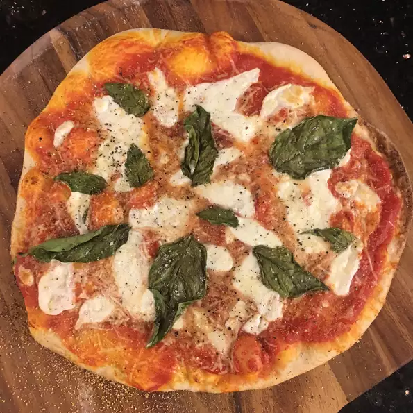

Pizza Recipe

Description
This is a wonderful steak dish that was prepared for me when I lived in Argentina. This Argentinean steak dish is quite popular in various restaurants around Buenos Aires.
Ingredients
- 1 cup red wine
- 1 teaspoon salt
- 1 spring fresh rosemary
- 4 New York strip steaks - 1" thick
Steps
- Combine red wine, salt and rosemary in small bowl. Let stand at room temp for 2 hours.
- Heat large cast iron over high heat. Cook steaks for 8 min per side until internal temp reaches 135 degrees F for med-rare.